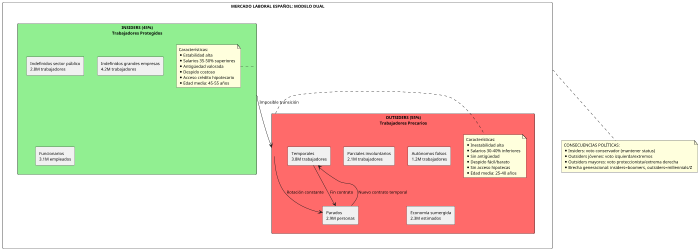
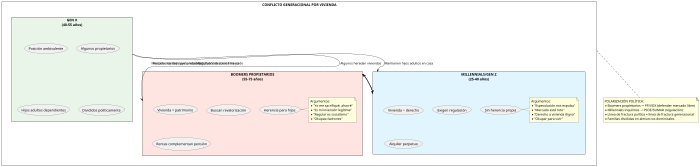
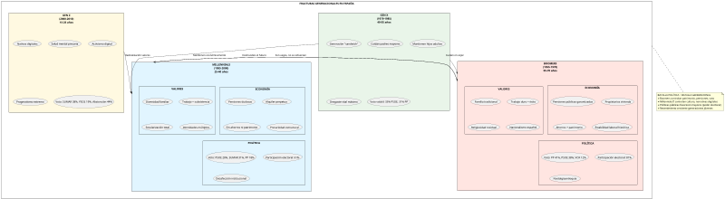
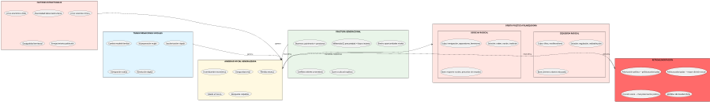

Raíces Sociológicas de la Polarización Española: Trabajo, Familia y Fracturas
Raíces Sociológicas de la Polarización Española: Trabajo, Familia y Fracturas
Matriz de Indicadores Sociológicos y Polarización
| Indicador | 2000 | 2008 | 2015 | 2020 | 2026 | Tendencia | Impacto Polarización |
|---|---|---|---|---|---|---|---|
| Tasa de paro (%) | 11.9% | 8.2% | 22.1% | 15.5% | 11.8% | Cíclica | Alto |
| Paro juvenil (<25 años) (%) | 25.6% | 18.2% | 48.4% | 38.3% | 26.9% | Cíclica | Muy Alto |
| Temporalidad laboral (%) | 32.1% | 29.2% | 25.1% | 23.8% | 24.7% | ↓ Lenta | Medio |
| Salario mediano (€ año) | 15800 | 18500 | 19500 | 20500 | 22300 | ↑ Lenta | Medio |
| Brecha salarial género (%) | 17.2% | 16.1% | 14.2% | 11.8% | 9.3% | ↓ Const | Alto (cultural) |
| Edad emancipación promedio | 26.3 | 27.1 | 29.3 | 29.8 | 30.2 | ↑ Const | Muy Alto |
| Precio vivienda (€/m² Madrid) | 1580 | 2850 | 2320 | 3100 | 4200 | ↑↑ Accel | Muy Alto |
| Tasa de natalidad (por 1000 hab) | 9.9 | 11.4 | 9.0 | 7.2 | 7.0 | ↓↓ Fuerte | Alto |
| Edad primer hijo (mujer) | 29.1 | 30.8 | 31.9 | 32.2 | 32.8 | ↑ Const | Medio |
| Hogares unipersonales (%) | 17.2% | 20.3% | 24.8% | 26.1% | 27.5% | ↑ Const | Medio |
| Personas en riesgo pobreza (%) | 19.6% | 19.8% | 28.6% | 26.4% | 26.8% | ↑ Crisis | Muy Alto |
| Índice Gini (desigualdad) | 0.321 | 0.313 | 0.346 | 0.330 | 0.338 | ↑ Crisis | Muy Alto |
| Confianza interpersonal (0-10) | 5.8 | 6.1 | 5.2 | 4.8 | 4.5 | ↓ Const | Alto |
Introducción: Lo Personal es Político
La polarización política española no puede entenderse únicamente desde variables electorales, ideológicas o históricas. Bajo la superficie de debates parlamentarios y enfrentamientos partidistas subyacen transformaciones profundas en la estructura socioeconómica que afectan directamente la vida cotidiana de millones de españoles: cómo trabajan, cómo viven, cómo forman familias, cómo se relacionan entre generaciones.
Este análisis examina cómo la precariedad laboral, la crisis de vivienda, la transformación del modelo familiar, las fracturas generacionales, la desigualdad territorial, y otros factores sociológicos alimentan y explican la polarización política. La hipótesis central es que la polarización política es fundamentalmente una respuesta a la ansiedad social generada por la ruptura del contrato social de posguerra que prometía movilidad ascendente, estabilidad laboral, acceso a vivienda, y mejores condiciones de vida para cada generación.
Cuando estas promesas se quiebran, los ciudadanos buscan explicaciones y soluciones. La polarización surge cuando diferentes sectores sociales responsabilizan a actores distintos (inmigrantes, élites, independentistas, "la casta", feministas, etc.) y abrazan soluciones políticas opuestas (proteccionismo vs. apertura, centralismo vs. federalismo, tradición vs. progresismo).
La Precariedad Laboral Como Motor de Polarización
El Modelo Dual del Mercado Laboral Español
España presenta uno de los mercados laborales más segmentados de Europa, dividiendo a trabajadores entre "insiders" (contratos indefinidos, protección alta) y "outsiders" (temporales, precarios, desprotegidos).

Dualidad y Sus Consecuencias Políticas
Este modelo dual genera fracturas políticas profundas:
Generacional: Los "insiders" son predominantemente baby boomers y Generación X temprana (45-65 años) que accedieron al mercado laboral en época de crecimiento (1980-2007). Los "outsiders" son millennials y Generación Z (25-40 años) que entraron durante o post-crisis 2008.
Territorial: Madrid y País Vasco concentran empleo de calidad (sectores financiero, tecnológico, industrial avanzado). Andalucía, Extremadura, Murcia concentran empleo temporal agrícola, turístico, construcción.
Sectorial: Sector público ofrece estabilidad; sector privado, especialmente servicios (hostelería, retail, cuidados), ofrece precariedad.
De género: Mujeres sobrerrepresentadas en parcialidad involuntaria (65% de contratos parciales) y sectores precarizados (cuidados, limpieza, comercio).
Datos de Precariedad Laboral
| Tipo de Precariedad | 2000 | 2008 | 2015 | 2026 | Población Afectada 2026 |
|---|---|---|---|---|---|
| Temporalidad | 32.1% | 29.2% | 25.1% | 24.7% | 4.8M trabajadores |
| Parcialidad involuntaria | 28.5% | 34.2% | 62.3% | 59.8% | 2.1M trabajadores |
| Sobrecualificación | 23.1% | 18.9% | 35.6% | 32.4% | 6.3M trabajadores |
| Salario < 60% mediana | 16.8% | 14.2% | 22.7% | 21.3% | 4.1M trabajadores |
| Sin contrato (sumergidos) | 11.2% | 8.7% | 14.3% | 12.1% | 2.3M estimados |
| Falsos autónomos | 3.4% | 5.1% | 8.9% | 7.8% | 1.2M trabajadores |
| Trabajo plataformas (gig) | 0% | 0.2% | 2.1% | 4.3% | 850K trabajadores |
Impacto Psicosocial de la Precariedad
La precariedad laboral genera consecuencias que trascienden lo económico:
Imposibilidad de planificación vital:
- No se puede firmar hipoteca sin contrato indefinido
- Retraso en formación de pareja estable
- Aplazamiento de maternidad/paternidad
- Imposibilidad de ahorro para pensión
Ansiedad y estrés crónico:
- Incertidumbre sobre ingresos próximos meses
- Estudios muestran correlación precariedad-ansiedad-depresión
- Consumo de ansiolíticos en España: +47% entre 2008-2024
- Población 25-40 años: mayor prevalencia trastornos ansiedad (28.3% según ESEMeD 2024)
Vergüenza y estigma social:
- Percepción de fracaso personal por situación estructural
- Comparación con generación de padres (mejor situada)
- Ocultamiento de situación real a familia/amigos
- Sentimiento de "generación perdida"
Cómo la Precariedad Alimenta Polarización
La precariedad laboral se traduce políticamente de formas divergentes según edad, educación y contexto:
Jóvenes urbanos con educación superior:
- Atribuyen precariedad a neoliberalismo, austeridad, poder empresarial
- Votan izquierda radical (Podemos/Sumar): promesas de regulación laboral, salario mínimo, vivienda pública
- Rechazan "sistema" que consideran capturado por élites
- Ejemplos: concentración voto Podemos en barrios urbanos jóvenes (Malasaña, Gràcia, Malagueta)
Jóvenes/adultos sin educación superior, zonas periurbanas/rurales:
- Atribuyen precariedad a inmigración (competencia laboral), globalización, "chiringuitos" autonómicos
- Votan derecha radical (VOX): promesas de preferencia nacional en empleo, reducir inmigración, centralismo
- Rechazo a "progresía" que consideran desconectada de realidad laboral
- Ejemplos: crecimiento VOX en cinturones industriales desindustrializados (Alcorcón, Hospitalet, periferia Valencia)
Adultos mediana edad en paro larga duración:
- Mayores de 45 años, parados de larga duración (>12 meses): 850,000 personas
- Percepción de abandono por "sistema" que les desechó
- Voto volátil: PP tradicional, VOX, abstención
- Alto resentimiento hacia "subsidios" a otros (inmigrantes, independentistas)
Insiders cercanos a jubilación:
- Temen perder estatus antes de retiro
- Voto conservador (PP) para mantener statu quo
- Rechazo a propuestas radicales de izquierda (temen despidos facilitados) o derecha (temen recortes sociales)
La Economía Gig y los "Riders": Símbolo de Precariedad
La economía de plataformas (Glovo, Uber Eats, Deliveroo, Stuart) simboliza la precariedad extrema del siglo XXI:
Características:
- Falsos autónomos: asumen riesgos, sin protección laboral
- Algoritmos opacidad: no saben cómo se les asigna trabajo
- Ingresos variables: 3-12€/hora según momento
- Sin derechos: bajas, vacaciones, desempleo
- Población: mayoritariamente inmigrantes (67%), jóvenes (82% <35 años)
Impacto político:
El conflicto de los riders ha sido campo de batalla político-ideológico:
- Izquierda: bandera de regulación, Ley Rider (2021) como victoria parcial
- Derecha: crítica regulación como destrucción empleo, defensa "libertad de elección"
- Riders como sujeto político: autoorganización, sindicatos alternativos, huelgas
El debate sobre riders cristaliza visiones opuestas del trabajo en siglo XXI: ¿flexibilidad liberadora o precariedad explotadora?
Crisis de Vivienda: El Sueño Imposible
Si hay un factor que unifica generacionalmente la frustración española es la imposibilidad de acceso a vivienda digna y asequible.
Evolución del Precio de la Vivienda
| Ciudad | Precio €/m² 2000 | Precio €/m² 2008 | Precio €/m² 2015 | Precio €/m² 2026 | Variación 2000-26 | Años salario medio para compra 2026 |
|---|---|---|---|---|---|---|
| Madrid | 1580 | 2850 | 2320 | 4200 | +166% | 15.8 años |
| Barcelona | 1620 | 2980 | 2450 | 4350 | +168% | 16.3 años |
| Valencia | 1020 | 1850 | 1180 | 2350 | +130% | 11.2 años |
| Sevilla | 980 | 1720 | 1090 | 2180 | +122% | 10.8 años |
| Bilbao | 1350 | 2420 | 2080 | 3420 | +153% | 13.1 años |
| Málaga | 1100 | 1950 | 1520 | 3120 | +184% | 12.4 años |
| Palma Mallorca | 1280 | 2680 | 2120 | 4680 | +266% | 18.2 años |
| Media nacional | 920 | 1650 | 1280 | 2180 | +137% | 9.7 años |
Nota: "Años salario medio" considera salario mediano, vivienda 80m², sin considerar intereses hipoteca
La Burbuja, el Crash, y la Nueva Burbuja
España vivió tres fases en vivienda con consecuencias políticas diferenciadas:
Fase 1: Burbuja Inmobiliaria (1997-2007)
Características:
- Precios se triplicaron en década
- Construcción descontrolada: 800,000 viviendas/año (más que Francia+Alemania juntas)
- Financiarización: "todos propietarios", especulación generalizada
- Corrupción urbanística sistémica: casos Malaya, Brugal, Gürtel-Fitur
Ilusión de prosperidad:
- Clase media accedió a propiedad vía hipotecas 40 años, 100-120% valor vivienda
- Generación 1970-1980 compró masivamente 2000-2007
- Percepción de enriquecimiento por revalorización vivienda
- Modelo clientelar: permiso construcción = corrupción política
Fase 2: Crash y Desahucios (2008-2015)
Catástrofe social:
- Precio cayó -40% en algunas zonas (2008-2013)
- 500,000 familias desahuciadas (2008-2015)
- Dación en pago prohibida: familias perdían vivienda pero conservaban deuda
- Suicidios asociados a desahucios: 12 casos documentados que generaron alarma social
Respuesta social y política:
- Plataforma Afectados por la Hipoteca (PAH): liderada por Ada Colau, se convirtió en movimiento social masivo
- Paralización de desahucios mediante acción directa
- Ocupaciones de viviendas vacías de bancos
- Victoria parcial: reforma 2013 permite dación en pago en casos vulnerabilidad
Transformación política:
- Ada Colau: de activista a alcaldesa de Barcelona (2015)
- Vivienda como eje político central para izquierda emergente
- Bancos convertidos en "enemigo público"
- Debate sobre derecho a vivienda vs. derecho a propiedad
Fase 3: Nueva Burbuja y Crisis de Alquiler (2015-2026)
Tras breve estabilización, precio vivienda volvió a dispararse, especialmente en ciudades:
Factores:
- Fondos buitre compraron activos baratos post-crisis (Blackstone, Cerberus)
- Turistificación: Airbnb convirtió viviendas en alojamiento turístico
- Inversión extranjera: golden visa atrajo capital chino, ruso, latinoamericano
- Demanda acumulada + crédito barato (euríbor negativo 2015-2021)
Crisis específica del alquiler:
| Ciudad | Alquiler €/mes 2015 | Alquiler €/mes 2026 | Variación | % salario mediano |
|---|---|---|---|---|
| Madrid | 850 | 1420 | +67% | 48.3% |
| Barcelona | 900 | 1520 | +69% | 51.2% |
| Valencia | 550 | 980 | +78% | 42.1% |
| Sevilla | 520 | 890 | +71% | 41.8% |
| Palma | 680 | 1380 | +103% | 54.7% |
Nota: Apartamento 2 habitaciones, zona media. % sobre salario mediano individual
Estándares internacionales consideran inasequible dedicar >30% ingresos a vivienda. España supera ampliamente en grandes ciudades.
Consecuencias Sociopolíticas de la Crisis de Vivienda
Imposibilidad de Emancipación
Edad media de emancipación en España (30.2 años, 2026) es la más alta de Europa Occidental:
- Alemania: 23.7 años
- Francia: 24.8 años
- Reino Unido: 25.1 años
- Italia: 29.8 años (similar)
- España: 30.2 años
Factores:
- Precio vivienda inasumible con salarios precarios
- Requisitos bancarios: contrato indefinido + 30% entrada + no superar 35% ingresos en cuota
- Alquiler consume >40% salario, imposibilita ahorro
- Ausencia de vivienda pública (2% stock vs. 15-30% Europa Norte)
Síndrome del "Hotel Mamá" y Dependencia Familiar
Jóvenes españoles 25-35 años presentan paradoja: alta formación + alta dependencia familiar:
Perfiles típicos:
- Universitario 28 años, vive con padres: Ingeniería informática, trabaja en consultora con temporal 24K€/año. No puede alquilar piso (requeriría 14.4K€/año), menos aún ahorrar entrada vivienda (requeriría 35-50K€). Posterga emancipación, pareja, hijos.
- Pareja 32 años, viven separados con respectivos padres: Ambos con grado universitario, contratos indefinidos, salarios combinados 42K€/año. No alcanzan entrada hipoteca (necesitan 45K€ ahorrados para piso 220K€). Plantean "okupar" o vivir en alquiler perpetuo.
Consecuencias psicológicas:
- Infantilización forzada: adultos tratados como adolescentes en casa familiar
- Conflictos intergeneracionales: padres no entienden "por qué no se van"
- Retraso vital: imposibilidad de desarrollar autonomía, intimidad, proyectos vitales
- Comparación odiosa: padres compraron piso con 25 años, salarios de cajera y albañil
Natalidad en Picado: "No Podemos Permitirnos Hijos"
España tiene tasa de natalidad de las más bajas del mundo (7.0 por 1000 habitantes, 2026):
Factores:
- Económicos: Coste estimado hijo hasta 18 años: 140,000€ (Encuesta CEOE 2024)
- Vivienda: Imposible criar familia en apartamento 50m² alquilado
- Laborales: Precariedad incompatible con maternidad (despidos post-baja maternal, discriminación)
- Servicios: Escasez escuelas infantiles 0-3 años públicas (23% cobertura vs. 50% UE)
Brecha de fecundidad deseada vs. real:
- Fecundidad deseada: 2.1 hijos por mujer (encuestas CIS)
- Fecundidad real: 1.16 hijos por mujer (2025)
- Gap: -0.94 hijos = "hijos que se desean pero no se tienen"
Dimensión política:
- Derecha: atribuye baja natalidad a "feminismo", "pérdida valores tradicionales"
- Izquierda: atribuye a precariedad, falta políticas conciliación, machismo laboral
- Extrema derecha (VOX): propone "prestación maternidad" para "mujeres españolas" (no inmigrantes), políticas pro-natalistas nacionalistas
Conflicto Intergeneracional Abierto
La vivienda es el principal eje del conflicto generacional en España:
Posición boomers propietarios:
- Vivienda como inversión principal, patrimonio para vejez
- Revalorizaciones beneficiosas económicamente
- Resistencia a regulación que deprecie su activo
- Alquilan segunda/tercera vivienda como complemento pensión
Posición millennials/Gen Z:
- Vivienda como derecho, no mercancía
- Exigen regulación de alquileres, limitación precios, vivienda pública
- Resentimiento hacia generación que "acaparó" viviendas
- Apoyo a okupación como "legítima defensa"
Batalla política:
- Regulación alquileres: Ley vivienda 2023 (PSOE-Sumar) limita incrementos alquiler en "zonas tensionadas"
- Apoyada por: jóvenes, inquilinos, izquierda
- Rechazada por: propietarios, mayores, derecha ("destruirá oferta", "socialismo")
- Fiscalidad vivienda vacía: Impuestos penalizadores a viviendas deshabitadas
- Barcelona: hasta 3,000€/año por piso vacío
- Madrid PP rechaza: "ataque propiedad privada"
- Vivienda pública: Construcción masiva 150,000 viviendas sociales (objetivo Gobierno 2023-2027)
- Oposición PP-VOX: "gasto público insostenible"
- Problema: ejecución lenta, solo 18,000 construidas (2023-2025)

Transformación del Modelo Familiar
De la Familia Tradicional a la Diversidad Familiar
España experimentó en 30 años una transformación radical en estructuras familiares:
| Tipo de Hogar | 1991 | 2001 | 2011 | 2026 | Variación 91-26 |
|---|---|---|---|---|---|
| Pareja casada con hijos | 46.2% | 38.7% | 31.2% | 24.8% | -21.4pp |
| Pareja casada sin hijos | 18.3% | 19.8% | 21.2% | 22.1% | +3.8pp |
| Pareja no casada con hijos | 2.1% | 4.8% | 8.9% | 13.2% | +11.1pp |
| Monoparental (madre) | 5.2% | 7.1% | 9.6% | 11.8% | +6.6pp |
| Monoparental (padre) | 1.1% | 1.6% | 2.3% | 3.2% | +2.1pp |
| Unipersonal | 13.2% | 17.2% | 23.8% | 27.5% | +14.3pp |
| Otros (extensa, múltiple) | 13.9% | 10.8% | 3.0% | -7.4% | -10.9pp |
Fuente: INE, Censos de Población y Encuesta Continua de Hogares
Causas de la Transformación
Incorporación Laboral Femenina
La entrada masiva de mujeres al mercado laboral transformó radicalmente familia:
Evolución tasa de actividad femenina:
- 1980: 28.1%
- 2000: 48.2%
- 2026: 68.7%
Consecuencias:
- Doble carga: Mujeres trabajan fuera + asumen mayoría trabajo doméstico/cuidados
- Tiempo dedicado tareas domésticas (horas/semana):
- Mujeres: 26.5 horas
- Hombres: 14.2 horas
- Brecha: 12.3 horas/semana (disminuyendo lentamente desde 18h en 2000)
- Tiempo dedicado tareas domésticas (horas/semana):
- Retraso maternidad: Edad primer hijo aumentó de 25.2 (1980) a 32.8 (2026)
- Conflicto trabajo-familia: Principal fuente estrés mujeres 30-45 años
- Divergencia educativa: Mujeres superan a hombres en educación superior (58% universitarias vs. 42% universitarios), pero persiste brecha salarial (9.3%) y t
echo de cristal
Secularización y Cambio de Valores
Declive del matrimonio religioso:
- 1980: 94.3% matrimonios por Iglesia
- 2000: 71.2% matrimonios por Iglesia
- 2026: 22.1% matrimonios por Iglesia
Aceptación diversidad familiar:
- Matrimonio homosexual (legal desde 2005): apoyo 74.2% población (2025)
- Adopción por parejas homosexuales: apoyo 68.9%
- Monoparentalidad elegida: creciente normalización
- Reproducción asistida: accesible solteras, parejas mujeres (ley 2023)
Ley de Divorcio Express (2005) y Consecuencias
La reforma del divorcio que eliminó requisito de separación previa facilitó rupturas:
Evolución divorcios:
- 2004: 50,974 divorcios
- 2006: 126,952 divorcios (+149% en 2 años post-reforma)
- 2026: 95,370 divorcios (estabilizado)
Tasa de divorcialidad: 2.1 por 1,000 habitantes (media europea)
Consecuencias sociológicas:
- Familias monoparentales mayoritariamente encabezadas por mujeres (78.7%)
- Pobreza infantil concentrada en hogares monoparentales (38.2% en riesgo pobreza)
- Segundas parejas, familias reconstituidas: 18.2% hogares con hijos
- Custodia compartida: aumentó de 9.6% (2007) a 41.2% (2026)
Polarización en Torno al Modelo Familiar
La transformación familiar es campo de batalla cultural con dimensión política clara:
Posiciones Ideológicas Sobre Familia
Izquierda/Progresismo:
- Celebran diversidad familiar como liberación
- Apoyan políticas conciliación, permisos iguales, escuelas infantiles públicas
- Defienden derechos LGTB+, reproducción asistida universal, vientres de alquiler (debate interno)
- Ley Trans (2023): autopercepción de género sin requisitos médicos
- Enfoque: libertad individual, igualdad de opciones
Derecha Moderada:
- Reconocen diversidad pero priorizan "familia tradicional"
- Políticas fiscales pro-familia (deducciones por hijos)
- Escuelas concertadas religiosas (libertad elección educativa)
- Cierta reticencia a "adoctrinamiento de género" en escuelas
- Enfoque: libertad elección, subsidiaridad
Extrema Derecha (VOX):
- Rechazo frontal a "ideología de género"
- Defensa familia tradicional (hombre+mujer+hijos) como única legítima
- Oposición a ley Trans, derogar leyes LGTB+
- "Pin parental": poder veto padres sobre contenidos educativos género
- Retórica de "protección de la infancia" contra "adoctrinamiento"
- Enfoque: tradición, "ley natural", nacionalismo demográfico
Batallas Culturales Concretas
Ley del "solo sí es sí" (2022):
- Reforma consentimiento sexual: sin consentimiento explícito = agresión
- Reducción penas por error técnico → excarcelación agresores
- Derecha criticó "ideología de género" sobre pragmatismo jurídico
- Izquierda defendió principio pero admitió error técnico
- Reforma 2024 corrigió defecto manteniendo espíritu
Ley Trans (2023):
- Autodeterminación género desde 16 años (14 con autorización parental)
- Fractura dentro del feminismo:
- Feminismo trans-inclusivo (Podemos, ministras): apoyo incondicional
- Feminismo crítico de género (sector PSOE): preocupación sobre espacios segregados por sexo, deportes, prisiones
- Derecha y extrema derecha: rechazo total ("borra a las mujeres", "adoctrinamiento infantil")
Vientres de alquiler / Gestación subrogada:
- Izquierda dividida:
- Sector liberal: derecho a formar familia, regulación que proteja gestantes
- Sector feminista: explotación reproductiva de mujeres vulnerables, venta de bebés
- Derecha: posiciones contradictorias (tradicionalistas rechazan, liberales aceptan)
- Ilegal en España, parejas acuden a Ucrania, EEUU, Canadá
Corresponsabilidad y permisos parentales:
- Ley 2021 igualdad permisos maternidad/paternidad (16 semanas ambos)
- Izquierda: victoria igualdad, facilita conciliación
- Derecha: acepta pero critica "imposición" vs. libertad elección familiar
- Realidad: uso permiso paternidad 95.2%, cambio cultural generacional
Impacto Generacional de los Modelos Familiares
Las generaciones viven modelos familiares radicalmente distintos:
Baby Boomers (1955-1970):
- Vivieron niñez en familias numerosas tradicionales (media 3.2 hermanos)
- Casados mayoritariamente (76.3%), muchos por Iglesia
- Divorciados: 12.8% (baja comparado con posteriores)
- Hijos promedio: 1.8
- Valoran estabilidad, matrimonio duradero
Generación X (1970-1985):
- Vivieron transición: de familia tradicional a moderna
- Tasas divorcio más altas (generación más divorciada: 18.2%)
- Hijos promedio: 1.4
- Matrimonios mixtos (civil + religioso)
- Criaron hijos con "doble carga" trabajo-familia sin apoyos
Millennials (1985-2000):
- Retrasan emancipación, matrimonio, hijos
- Parejas de hecho mayoritarias vs. matrimonio
- Hijos promedio proyectado: 1.1
- Alta aceptación diversidad familiar, LGTB+
- Priorizan realización personal vs. familia
Generación Z (2000-2010):
- Aún no en edad formar familia mayoritariamente
- Nativos digitales en relaciones (apps citas)
- Máxima aceptación diversidad (92.1% apoya matrimonio homosexual)
- Pragmatismo reproductivo: "hijos si condiciones económicas"
- Fluidez identidades de género
Esta divergencia generacional en vivencias y valores familiares alimenta incomprensión mutua y polarización política.
Fracturas Generacionales: La Guerra de las Edades
Más allá de vivienda y familia, existe un conflicto generacional multidimensional:

Sistema de Pensiones: Conflicto Intergeneracional
El sistema de pensiones español es fuente principal de tensión generacional:
Estructura actual:
- Sistema de reparto: trabajadores actuales pagan pensiones actuales
- Ratio activo/pensionista:
- 1980: 3.8 trabajadores por pensionista
- 2000: 2.9 trabajadores por pensionista
- 2026: 2.1 trabajadores por pensionista
- 2050 proyección: 1.3 trabajadores por pensionista
Insostenibilidad matemática:
- Gasto en pensiones: 14.1% PIB (2026), proyección 17.3% PIB (2050)
- Pensión media: 1,258€/mes (2026)
- Cotización: trabajadores pagan hasta 37.7% salario bruto
- Fondo de Reserva ("hucha de pensiones"): agotado 2020
Posiciones generacionales:
Pensionistas actuales (boomers):
- "Hemos cotizado toda la vida, merecemos pensión digna"
- Rechazo a cualquier recorte o aumento edad jubilación
- Poder electoral: 9.8M pensionistas, participación >80%
- Movilizaciones masivas contra reformas (2023: +500K en manifestación Madrid)
Trabajadores actuales (millennials/GenX):
- "Estamos pagando pensiones que nunca cobraremos"
- Conciencia de insostenibilidad, exigen reformas estructurales
- Frustración por carga fiscal alta para pagar pensiones ajenas
- Apoyo a planes privados complementarios (desconfianza en público)
Soluciones polarizadas:
- Izquierda: aumento impuestos altos patrimonios, cotizaciones máximas, impuesto sucesiones para financiar pensiones
- Derecha: reformas paramétricas (edad jubilación, cálculo pensión), fomento ahorro privado
- Extrema derecha: prioridad pensionistas "españoles" vs. inmigrantes, nacionalización pensiones
El debate pensiones cristaliza conflicto "mayores que vivieron bienestar vs. jóvenes que vivirán precariedad".
Desigualdad Territorial: Las Españas Enfrentadas
España presenta disparidades territoriales profundas que alimentan polarización:
| Comunidad Autónoma | PIB per cápita (€) | Tasa paro (%) | Salario medio (€) | Precio vivienda (€/m²) | Voto dominante 2023 |
|---|---|---|---|---|---|
| Madrid | 38900 | 9.2% | 29800 | 4200 | PP 43.8% |
| País Vasco | 37200 | 8.6% | 31200 | 3420 | PNV 38.2% |
| Navarra | 35100 | 8.9% | 29500 | 2680 | PSN 24.1%, UPN 20.8% |
| Cataluña | 32500 | 10.1% | 27900 | 4350 | PSC 27.5%, Junts 21.4% |
| Aragón | 30200 | 9.8% | 25100 | 1820 | PSOE 34.2% |
| Baleares | 29100 | 10.8% | 24300 | 4680 | PP 34.1% |
| Cantabria | 26800 | 11.2% | 24800 | 2120 | PRC-PP 35.8% |
| Castilla y León | 25900 | 11.8% | 23900 | 1580 | PP 42.1% |
| Galicia | 25600 | 11.4% | 23500 | 1780 | PP 48.3% |
| Asturias | 24800 | 12.8% | 24100 | 1920 | PSOE 34.7% |
| Comunidad Valenciana | 24200 | 12.4% | 23200 | 2350 | PP 40.2% |
| Murcia | 22100 | 13.6% | 22100 | 1680 | PP 45.8% |
| Andalucía | 20800 | 17.8% | 22400 | 2180 | PP 43.1% |
| Extremadura | 19200 | 16.2% | 21200 | 1240 | PSOE 44.3% |
La Brecha Madrid-Periferia
Madrid se ha convert ido en símbolo de concentración económica y política que genera resentimiento:
Concentración en Madrid:
- 35 de 35 empresas del IBEX35 tienen sede social en Madrid
- 89% sedes corporativas empresas >1,000 empleados
- Hub transportes, comunicaciones, finanzas, tecnología
- "Efecto capital": recursos públicos, influencia política, inversión
Narrativas enfrentadas:
Desde Madrid:
- "Motor económico de España, subsidiamos regiones deficitarias"
- "Éxito por políticas liberales (Ayuso: impuestos bajos)"
- "Cataluña y País Vasco reciben privilegios fiscales injustos"
Desde periferia:
- "Madrid extrae talento, empresas, recursos del resto"
- "Centralismo histórico que empobrece periferia"
- "Ventajas por ser capital, no por mérito propio"
Impacto político:
- Madrid: bastión PP (Isabel Díaz Ayuso encarna discurso "libertad vs. socialismo")
- Periferia: diversidad PSOE, PP regional, nacionalismos
- Debates sobre financiación autonómica imposibles de resolver
España Vaciada: El Resentimiento Rural
El fenómeno de la "España vaciada" (despoblación rural) tiene dimensión política clara:
Datos despoblación:
- 63% municipios españoles tienen <1,000 habitantes
- 5,000 pueblos en riesgo de desaparición (población <100 hab, envejecida)
- Densidad población zonas rurales: <12 hab/km² (umbral despoblación severa)
- Migración rural→urbana: -2.3M personas (1990-2025) en provincias interiores
Causas:
- Falta oportunidades laborales: agricultura mecanizada, industria inexistente
- Servicios públicos deficientes: escuelas, sanidad, transporte
- Brecha digital: 37% zonas rurales sin banda ancha
- Fuga jóvenes: solo retornan jubilados
Consecuencias políticas:
La España vaciada vota diferente a la urbana:
| Zona | VOX (%) | PP (%) | PSOE (%) | SUMAR (%) |
|---|---|---|---|---|
| Rural (<5K hab) | 18.2 | 42.1 | 31.2 | 4.1 |
| Periurbana (5-50K) | 14.7 | 36.8 | 29.3 | 8.8 |
| Urbana (50-500K) | 11.2 | 31.4 | 32.1 | 13.2 |
| Gran ciudad (>500K) | 8.9 | 28.3 | 30.8 | 18.7 |
La correlación es clara: a menor densidad población, mayor voto conservador/extrema derecha.
Factores explicativos:
- Edad: zonas rurales más envejecidas, mayores votan conservador
- Valores: mayor religiosidad, tradicionalismo, rechazo a "ideología de género"
- Economía: dependencia de sectores primarios, construcción
- Resentimiento: percepción abandono por "élites urbanas progres"
Plataforma Teruel Existe y movimiento España Vaciada:
Respuesta ciudadana a despoblación:
- Partidos provinciales: Teruel Existe, Soria ¡Ya!, España Vaciada
- Demandas: inversión infraestructuras, servicios públicos, fiscalidad favorable
- Logros: 2 diputados (2019), influencia en gobiernos minoritarios
- Crítica: asistencialismo puntual sin estrategia territorial coherente
Nacionalismos Periféricos vs. Centralismo
La fractura territorial clásica persiste y se ha agudizado post-Procés:
Posiciones irreconciliables:
Independentismo catalán (42% población Cataluña):
- Catalunya nación diferenciada cultural, lingüística, históricamente
- Derecho autodeterminación: referéndum legal
- Expolio fiscal: 16,000M€/año aportación neta a España
- Represión cultural e institucional desde Madrid
Nacionalismo español (mayoría resto España):
- España nación indivisible (Constitución art.2)
- Referéndum independencia inconstitucional, ilegal
- Solidaridad territorial justa: Catalunya región rica debe solidaridad
- "Privilegios" catalanes (financiación, lengua, simbolos) injustos
Batalla del relato histórico:
- Independentismo: Catalunya anexionada 1714, recuperar soberanía perdida
- Españolismo: Catalunya parte España desde Reyes Católicos, no existe anexión
Imposibilidad de consenso:
- Moderación catalana (PSC, Comuns) minoritaria vs. independentismo
- Moderación española (PSOE) criticada por PP/VOX como "traición"
- Amnistía 2024: considerada solución por PSOE, afrenta por PP/VOX/sector judicial
Este conflicto sin solución feed-back loops polarización mutua.
Resumen Ejecutivo: Cadenas Causales de la Polarización
La polarización política española surge de la confluencia de múltiples factores sociológicos:

La polarización española es producto de:
- Crisis económica no resuelta: 2008-2015 destruyó confianza en sistema, generó perdedores permanentes
- Precariedad laboral estructural: dualiza sociedad entre protegidos y desprotegidos
- Imposibilidad acceso vivienda: frustra proyecto vital generaciones jóvenes
- Transformación familiar acelerada: genera conflicto valores tradicionales vs. progresistas
- Fractura generacional profunda: boomers vs. millennials por recursos, oportunidades, valores
- Desigualdad territorial: Madrid vs. periferia, urbano vs. rural, centro vs. nacionalidades
- Inmigración rápida: 16% población extranjera genera reacción identitaria sectores
- Ecosistema mediático polarizado: amplifica divisiones, crea cámaras de eco
- Liderazgos políticos irresponsables: prefieren polarización (moviliza bases) a consenso
El resultado es una sociedad dividida en:
- Eje económico: insiders vs. outsiders, propietarios vs. inquilinos, pensionistas vs. cotizantes
- Eje generacional: boomers vs. millennials/Z
- Eje territorial: centro vs. periferia, urbano vs. rural, España vs. nacionalidades
- Eje cultural: tradición vs. progresismo, familia tradicional vs. diversidad, religión vs. secularismo
- Eje identitario: españolismo vs. nacionalismos periféricos, nativismo vs. multiculturalismo
Estas divisiones se refuerzan mutuamente y se traducen políticamente en bloques irreconciliables que hacen gobernabilidad extremadamente difícil.
Conclusión: Salidas Posibles
La polarización española tiene raíces sociológicas profundas que no desaparecerán con cambios de gobierno. Requiere transformaciones estructurales:
En lo económico:
- Regulación laboral que reduzca dualidad
- Política vivienda pública masiva (modelo Viena: 60% vivienda social)
- Reforma fiscal redistributiva que reduzca desigualdad
- Inversión territorial equilibrada que frene despoblación
En lo social:
- Políticas conciliación reales (horarios europeos, bajas parentales)
- Servicios públicos universales calidad (educación 0-3, dependencia)
- Reducción brecha generacional mediante pacto intergeneracional (pensiones, vivienda, empleo)
En lo cultural:
- Pedagogía democrática que valore pluralismo
- Mediación en conflictos identitarios
- Regulación discurso de odio sin censurar debate
- Alfabetización mediática digital
En lo político:
- Liderazgos responsables que construyan puentes
- Reforma electoral que incentive consenso
- Despolarización discursiva institucional
- Pactos de Estado en áreas críticas
Sin estas transformaciones, España continuará su deriva hacia polarización creciente con riesgo de ingobernabilidad permanente o, peor, soluciones autoritarias que prometen orden mediante supresión de pluralismo.
La historia española advierte: las sociedades profundamente divididas eventualmente fracturan. La pregunta no es si España puede evitar polarización, sino si puede gestionarla dentro de marcos democráticos o si, como en 1936, terminará por desbord arla.
Referencias Documentales
Estudios Sociológicos y Económicos
- Fundación FOESSA (2024). IX Informe sobre exclusión y desarrollo social en España. Madrid: Cáritas.
- López, Isidro & Rodríguez, Emmanuel (2010). Fin de ciclo: Financiarización, territorio y sociedad de propietarios en la onda larga del capitalismo hispano. Madrid: Traficantes de Sueños.
- Observatorio Social "la Caixa" (2025). Desigualdades y polarización en España: análisis territorial y generacional. Barcelona.
Mercado Laboral y Precariedad
- Toharia, Luis (dir.) (2023). El mercado de trabajo en España en la era de la globalización. Madrid: MTAS.
- Consejo Económico y Social (2024). Informe sobre la situación sociolaboral en España 2024. Madrid: CES.
- Fundación 1º de Mayo (2025). Precariedad laboral y desigualdad: análisis por generaciones. Madrid: CCOO.
Vivienda
- Rodríguez López, Julio (2019). El mercado de vivienda español en la encrucijada. Barcelona: Cartelera Turia.
- Observatorio Metropolitano (2024). Crisis de vivienda y desigualdad territorial en España. Madrid: Traficantes de Sueños.
- Idealista (2026). Informe del precio de la vivienda en España 2025. Madrid.
Familia y Demografía
- Instituto Nacional de Estadística (2025). Encuesta Continua de Hogares 2024. Madrid: INE.
- Centro de Investigaciones Sociológicas (2024). Barómetro especial: Familia y natalidad. Madrid: CIS.
- Meil Landwerlin, Gerardo (2023). Individualización y solidaridad familiar en España. Madrid: CIS.
Generaciones
- González-Anleo, Juan & López-Ruiz, José A. (2024). Jóvenes Españoles 2024. Madrid: Fundación SM.
- Benedicto, Jorge (coord.) (2024). La juventud española entre la igualdad y la frustración. Madrid: INJUVE.
Polarización Política
- Torcal, Mariano & Carty, Emily (2023). "La polarización afectiva en España en perspectiva comparada." Revista Española de Ciencia Política, 61: 13-41.
- Rama, José et al. (2022). Polarización y populismo en España: El ascenso de Vox. Valencia: Tirant lo Blanch.
Bases de Datos
- Eurostat: Labour Force Survey, EU-SILC (2000-2025)
- Instituto Nacional de Estadística: Encuesta de Población Activa, Encuesta Continua de Hogares, Padrón Municipal
- Centro de Investigaciones Sociológicas: Barómetros mensuales, estudios especiales
- World Values Survey: Datos España waves 5-7
European Social Survey: Rounds 1-10, datos España